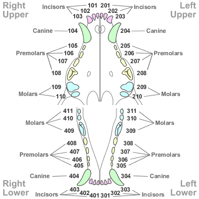

Extracted
Missing
Noted (anything else)
Click a tooth area to chart it (popup resets each click). Use “Edit” in the table to adjust a tooth later.
Charted teeth (only what you click)
| Tooth |
Status |
PD |
Furc |
Other |
Edit |
| No teeth charted yet. |
PD: 0–4 (0 normal, 1 gingivitis, 2 <25%, 3 25–50%, 4 >50%) • Furcation: 0–3